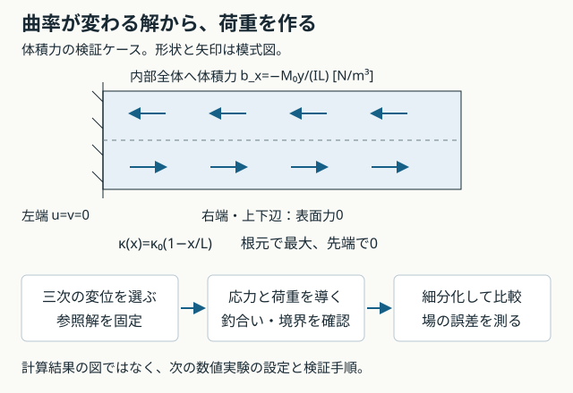

L5-Q01
問い：Q4の寄生せん断ひずみは中央で0になる。せん断エネルギーも0になるか。
解答例と解説
解答例：ならない。全域でのせん断ひずみの二乗を積分するため、κ≠0なら正となる。
解説：長方形の参照節点変位の補間ではU_s=GsHκ²ℓ³/24。符号が左右で反転しても二乗したエネルギーは相殺しない。中央1点の評価と、全体の積分を区別する。
MECHANICAL DESIGN STUDY · LESSON 05
今度は、二次要素でも厳密には表せない変位場へ。細分化で誤差が減るかを調べます。
次の数値実験の定式化・実装仕様です。参照式を検証済みですが、新しい体積力ケースのFEM計算は未実装です。
確認は節目でまとめて行います。既に説明できた内容の反復は省き、末尾の一問一答は必要なときの復習に使います。
Q4の参照節点変位の補間ではγ_xy,h=κ(ℓ/2−x)。中央で0でも、二乗した値の積分は正になります。
U_s = ½∫ Gγ_xy,h² s dΩ = GsHκ²ℓ³/24 > 0
曲げ深さ全体を1要素で表す長方形（0≤x≤ℓ、−H/2≤y≤H/2）で、U_b=EIκ²ℓ/2とすると、U_s/U_b=(G/E)(ℓ/H)²。長細い要素ほど不要なせん断成分の負担が増えます。
同じ曲げ変形に余分なエネルギーが必要になる仕組みです。これは参照節点値の補間検査であり、求解したFEM変位そのものではありません。中央1点だけの積分はこの成分を見逃しますが、安定化なしQ4には零エネルギーモードの問題が残ります。

L=0.1 m、H=0.01 m、面外厚さs=0.001 m、E=70 GPa、ν=0を引き継ぎます。M₀=0.1 N·mは根元の曲げモーメントの尺度で、右端荷重ではありません。I=sH³/12、κ₀=M₀/(EI)とします。
κ(x)=κ₀(1−x/L)
u*=−κ₀y(x−x²/(2L))
v*=κ₀(x²/2−x³/(6L))
v*のx³はT6にも長方形Q9にも含まれません。講義4の純曲げと違い、要素を細かくした効果を場の誤差で調べられます。
変位を微分するとε_x*=−κ₀y(1−x/L)、ε_y*=γ_xy*=0。ν=0の材料則よりσ_x*=−M₀y(1−x/L)/I、他の応力は0になります。
div σ + b = 0
b_x=−∂σ_x*/∂x=−M₀y/(IL)、b_y=0
bは単位体積あたりの力[N/m³]です。表面力[Pa]や節点力[N]と混同しません。
| 場所 | 条件 |
|---|---|
| 左端 | u=v=0 |
| 右端・上下辺 | 表面力0 |
| 内部 | b_x=−M₀y/(IL)、b_y=0 |
| 全体の釣合い | 合力0、体積力の合モーメント+M₀、支持反力モーメント−M₀（+zを正） |
これは製造解法（MMS）です。先に変位を選び、方程式と境界条件から対応する荷重を導きます。実機の荷重を変える設計手法ではなく、数値実装を検証するための問題作りです。SandiaのMMS解説
| 量 | 値 |
|---|---|
| 先端中央たわみ M₀L²/(3EI) | 0.057142857 mm |
| ひずみエネルギー M₀²L/(6EI) | 2.857142857×10⁻⁵ J |
| 根元の縁応力の大きさ | 6.000 MPa |
| 上縁x/L=0.45のσx | −3.300 MPa |
| 上縁のb_x | −6.000×10⁷ N/m³ |
先端たわみだけがよく一致しても、内部の変位・ひずみが正しいとは限りません。変位場の差を体積積分したL2相対誤差e_uと、ひずみ場の差を材料行列Dで重み付けしたエネルギーノルム誤差e_Eを追加します。
e_Eは総エネルギーの相対差|U_h−U*|/U*とは別の量です。Markdown版の定義式に沿って名前も分けて保存します。
h → h/2 の観測次数：p_obs = log₂(e_h / e_(h/2))
例：誤差0.08 → 0.02なら、その区間のp_obs=2
同じ要素・積分法・外形でnx,nyをともに2倍にし、複数段階で比較します。誤差0や丸め誤差域にはこの式を使わず、1組だけで漸近収束を断定しません。
この体積力ケースはまだCLIに追加していません。ここで確定した参照解と受入条件を、次の実装の基準にします。
各問でいったん考え、解答例と解説を開いて確認する。対話で扱った論点を汎用の教材として再構成したもので、個人の回答・成績・実行記録ではない。解答例を読んだことと、自分で説明・実行できたことは別に確認する。
問い：Q4の寄生せん断ひずみは中央で0になる。せん断エネルギーも0になるか。
解答例：ならない。全域でのせん断ひずみの二乗を積分するため、κ≠0なら正となる。
解説：長方形の参照節点変位の補間ではU_s=GsHκ²ℓ³/24。符号が左右で反転しても二乗したエネルギーは相殺しない。中央1点の評価と、全体の積分を区別する。
問い：新しい参照変位で応力の発散が0でないのに、体積力を省いてよいか。
解答例：省けない。div σ+b=0を満たすb_x=−M₀y/(IL)が必要。
解説：bはN/m³。境界の表面力や節点力と区別し、∫Nᵀb s dΩで荷重ベクトルへ変換する。参照解の形だけを変更すると、異なる荷重問題を照合する誤りになる。
問い：三次変位のケースで、先端たわみがよく一致したら収束確認は十分か。
解答例：十分ではない。内部を含む変位場・ひずみ場の誤差も、複数の分割で確認する。
解説：一点の超収束や偶然の一致がありうる。e_uとe_Eを使い、総エネルギーの差とひずみ場の差のノルムも区別する。
問い：hを半分にして誤差が0.08から0.02になった。この区間の観測収束次数と、解釈の限界は何か。
解答例：log₂(0.08/0.02)=2。ただし1組だけで漸近収束を断定しない。
解説：同じ要素、積分法、荷重、外形と、同じ誤差指標を使う。複数段階の結果を見る。誤差0や丸め誤差域では、この比から収束次数を判断しない。